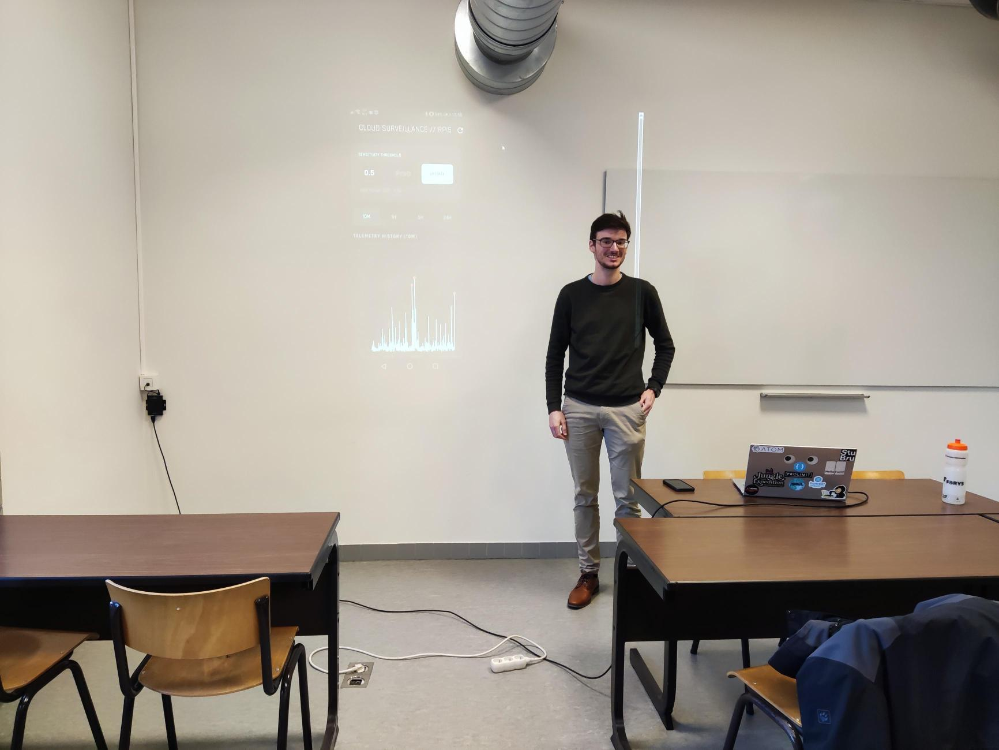

Het afgelopen semester was een intensieve maar uiterst boeiende periode in mijn opleiding Toegepaste Informatica (AI) aan Howest. We doken diep in de wereld van robotica, edge computing en cloud-integratie. Hier zijn enkele van de meest opvallende projecten waar ik aan heb gewerkt.
Computer Vision in Robotica: De Robo-Dog
Binnen het vak Trending Topics in AI kregen we de kans om te werken met geavanceerde robotica. We programmeerden een mechanische hond om interactie aan te gaan met zijn omgeving via Computer Vision. In de onderstaande video zie je hoe de robot autonoom naar een afbeelding van een kat wandelt — een perfecte demonstratie van hoe AI hardware tot leven brengt.
De robot-hond in actie: detectie en interactie via Computer Vision.
Cloud-Based Drone Detectie
Voor Cloud Computing for AI bouwden we een systeem dat drones detecteert op basis van audiosignalen. Dit was een volledig geïntegreerd project waarbij we verschillende technologieën combineerden:
- Hardware: Een Raspberry Pi 5 voor de audio-opname en initiële verwerking.
- Cloud: Azure IoT Hub voor de data-infrastructuur.
- AI & App: Een Flutter-applicatie geïntegreerd met OpenAI om de resultaten inzichtelijk te maken voor de gebruiker.

Industrieel Onderzoek bij Exail
Naast de campus-projecten spendeerde ik vier weken bij Exail voor een gezamenlijk AI-onderzoeksproject. Het was een unieke kans om in een professionele industriële omgeving te werken en te zien hoe AI daar het verschil kan maken.
Blik op de Toekomst
Dit semester legde ook de basis voor mijn bachelorproef, waarin ik onderzoek doe naar Detector-Free Image Matching algoritmen. Bovendien kijk ik enorm uit naar mijn stage bij AVR, waar ik me zal focussen op het opzetten van een MLOps-platform.
Bekijk ook mijn originele terugblik op LinkedIn:
Bekijk op LinkedIn